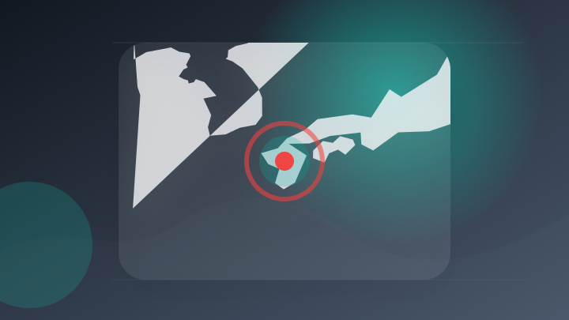
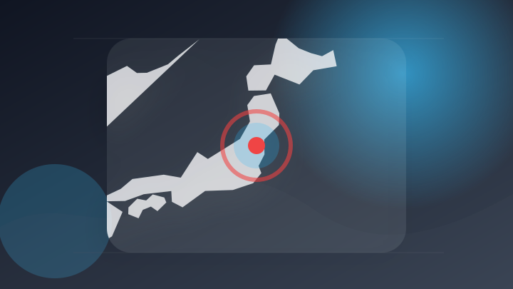
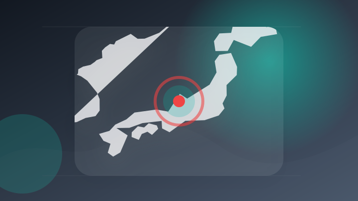
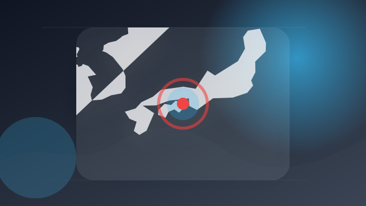
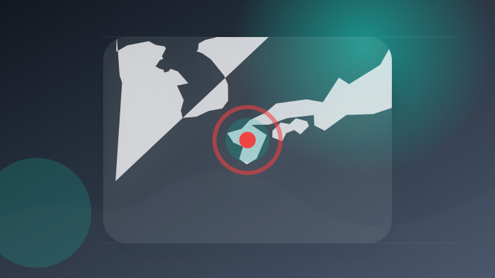
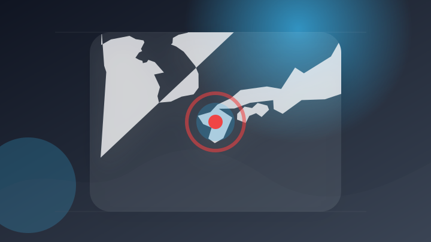
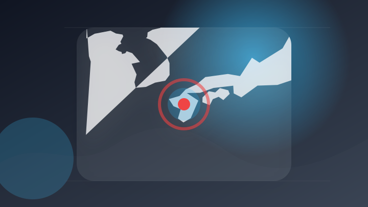
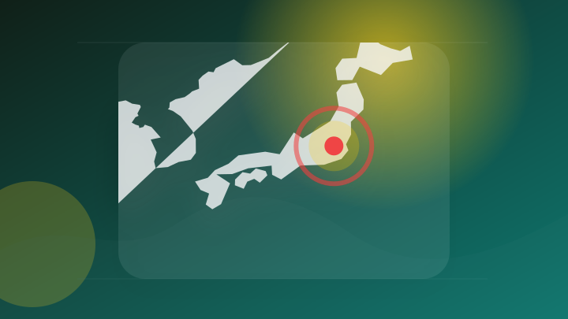

AI
6 topics
アドビ、ChatGPT向け統合プラグインを提供開始。PhotoshopやPremiereなど70以上のツールを利用可能に
アドビ、ChatGPT向け統合プラグインを提供開始。PhotoshopやPremiereなど70以上のツールを利用…
注目ポイント独立2媒体｜注目度 66点
ChatGPTでアドビ製ツールが横断利用可能に 70以上の機能を統合
注目ポイント注目度 64点
「ChatGPT向けアドビプラグイン」がリリース ～Acrobat、Photoshop、Premiereなどの機能を1つのプラグインに統合
「ChatGPT向けアドビプラグイン」がリリース ～Acrobat、Photoshop、Premiereなどの機能…
注目ポイント注目度 64点
ソフトバンクG、投資利益1.8兆円を支えた「OpenAIではない“あの半導体メーカー”」の正体
注目ポイント注目度 64点
【OpenAIとAnthropic「上場が危うい」→モデルの価値が急減】オフィスアプリとOSで挽回／「オープンモデル一択」Kimi K3が変えた常識／「年90%減」AIが価格崩壊【1on1 Tech】
【OpenAIとAnthropic「上場が危うい」→モデルの価値が急減】オフィスアプリとOSで挽回／「オープンモデ…
注目ポイント注目度 64点
OpenAI、アップルによる営業秘密侵害の訴え退けるよう申し立て
注目ポイント注目度 64点
IT業界
6 topics
Mrs. GREEN APPLE、最優秀アーティスト賞2連覇達成した"MUSIC AWARDS JAPAN 2026"での「クスシキ」ライヴ・パフォーマンスをYouTube公開
Mrs. GREEN APPLE、最優秀アーティスト賞2連覇達成した"MUSIC AWARDS JAPAN 202…
注目ポイント独立3媒体｜注目度 70点
Deel、AIサイバーセキュリティの先駆企業Clarityを買収AI時代に対応した人材認証・セキュリティ基盤の構築を加速
Deel、AIサイバーセキュリティの先駆企業Clarityを買収AI時代に対応した人材認証・セキュリティ基盤の構築…
注目ポイント注目度 64点
【プライズ発表】創業支援プログラム第5期「Out of BOUNDS」、優勝者に最低10万ドル（約1,500万円）相当のMicrosoft Azureクレジットを贈呈
【プライズ発表】創業支援プログラム第5期「Out of BOUNDS」、優勝者に最低10万ドル（約1,500万円）…
注目ポイント注目度 64点
Microsoft Teams上で名刺の登録・検索が完結する新機能「SmartVisca for Teams」を提供開始
Microsoft Teams上で名刺の登録・検索が完結する新機能「SmartVisca for Teams」を提…
注目ポイント注目度 64点
AI検索はGoogle検索を置き換えるのではなく新たな顧客を呼び込んでいるとShopifyが報告
注目ポイント注目度 64点
アプリが遅い原因をAIがトレースログから分析してくれる「Windows Performance Analyzer MCP」 Microsoftがプレビュー公開
アプリが遅い原因をAIがトレースログから分析してくれる「Windows Performance Analyzer…
注目ポイント注目度 64点
政治
6 topics

熊本地震対応の補正編成、臨時国会では見送る意向 政府が与党に伝達
注目ポイント注目度 70点
ストーカー被害から身を守るために
注目ポイント政府｜注目度 65点
豪州連邦政府、カーボンニュートラル認証制度を廃止へ（豪州）
注目ポイント注目度 65点
ミャンマー政権トップ、タイ首相と会談「親軍政権の早期承認」目的か（2026年8月6日掲載）｜日テレNEWS NNN
ミャンマー政権トップ、タイ首相と会談「親軍政権の早期承認」目的か（2026年8月6日掲載）
注目ポイント日テレNEWS・NNN｜注目度 64点
「核の被害者」政治利用 中国：時事ドットコム
注目ポイント独立2媒体｜注目度 64点

「選挙違反をやったつもりない」元衆議院議員・亀岡偉民被告が改めて主張 公職選挙法違反事件、裁判が結審 福島地裁
注目ポイント注目度 64点
社会
6 topics
未就学の息子をコップで殴打 飲食店従業員の女（41）逮捕 子どもは頭に軽傷 北海道倶知安町
注目ポイント注目度 70点

大学院入試替え玉受験で逮捕の大学生 不起訴に 金沢地検
注目ポイント注目度 70点
“トクリュウ”トップの男ら5人逮捕 強盗に入る目的で元宝石店付近を徘徊か
注目ポイント注目度 70点
毎日新聞の女性記者、夫に包丁を向け脅した疑いで逮捕…容疑を否認
注目ポイント注目度 70点
【続報】新見市の職員を逮捕 指名競争入札で予定価格（約1億円）を教えた疑い 落札した会社の役員も逮捕【岡山】
注目ポイント注目度 70点

徳島 阿南 川で男子高校生死亡 水難事故か
注目ポイント注目度 70点
事件・事故
6 topics
20代男性を殴って負傷させ、現金1万2000円奪ったか 男6人が強盗致傷容疑で逮捕 何らかの金銭トラブルとみて捜査 富山・砺波市
20代男性を殴って負傷させ、現金1万2000円奪ったか 男6人が強盗致傷容疑で逮捕 何らかの金銭トラブルとみて捜査…
注目ポイント独立2媒体｜注目度 95点
新見市職員ら逮捕 官製談合疑い 公共工事入札の価格情報漏えいか【動画あり】
注目ポイント独立2媒体｜注目度 72点
【続報】柳津町でバスとダンプが衝突 意識不明だったバス運転手が死亡 | ふくしまNEWS - KFBデジタル -
【続報】柳津町でバスとダンプが衝突 意識不明だったバス運転手が死亡 | ふくしまNEWS - KFBデジタル
注目ポイント独立2媒体｜注目度 72点
面識ある女性の水筒に”下半身”を押し付け”使用不能”にした疑い…66歳男を『器物損壊』容疑で逮捕…別事件の捜査中にスマホから動画が見つかり犯行が発覚「間違いありません」〈北海道札幌市〉
面識ある女性の水筒に”下半身”を押し付け”使用不能”にした疑い…66歳男を『器物損壊』容疑で逮捕…別事件の捜査中に…
注目ポイント注目度 70点
「案件屋」存在を視野に捜査 強盗予備の疑いで男ら5人逮捕（2026年8月6日掲載）｜日テレNEWS NNN
「案件屋」存在を視野に捜査 強盗予備の疑いで男ら5人逮捕（2026年8月6日掲載）
注目ポイント注目度 70点

熊本 宇城 竹やぶ火災で消火難航 地震で消火栓の水圧不足か
注目ポイント注目度 70点
芸能人の結婚・離婚・交際
2 topics
災害
6 topics
【台風情報】ダブル台風の今後の進路予想は 台風13号は8日（土）にかけて強い勢力を維持して南西諸島に接近し、9日頃にかけて東シナ海を西に進む見込み
【台風情報】ダブル台風の今後の進路予想は 台風13号は8日（土）にかけて強い勢力を維持して南西諸島に接近し、9日頃…
注目ポイント注目度 70点
大型で非常に強い台風13号｢ドルフィン｣ 沖縄付近で速度が落ち… 熊本など九州にも影響のおそれ 今後の進路 雨シミュレーション【台風情報】
大型で非常に強い台風13号｢ドルフィン｣ 沖縄付近で速度が落ち… 熊本など九州にも影響のおそれ 今後の進路 雨シミ…
注目ポイント注目度 70点

熊本地震の死者の氏名、県が新たに公表 遺族から同意を得られた5人
注目ポイント注目度 70点

熊本地震 県が亡くなった5人の氏名や年齢などを公表
注目ポイント注目度 70点
【台風13号速報まとめ】最新の進路・休業・交通・イベント中止情報（随時更新）
注目ポイント注目度 67点
【台風13号】沖縄本島全域に暴風警報 那覇で転倒、けが1人 南北大東で避難者46人【進路図あり】
注目ポイント注目度 67点
国際
4 topics
24歳のタイ人サッカー選手、試合中に落雷を受けて死亡 問題指摘する声も
注目ポイント注目度 67点
フーシ派の攻撃で30人死亡と報道
注目ポイント注目度 67点
ソロモン諸島首相、「一つの中国」堅持を改めて表明
注目ポイント注目度 61点
【国際教養】JALプロジェクト最終発表会開催 学生がZ世代の視点で新たな旅を提案｜ニュース一覧
【国際教養】JALプロジェクト最終発表会開催 学生がZ世代の視点で新たな旅を提案
注目ポイント注目度 61点
経済
6 topics
◎〔決算〕ソフトバンクＧ、純利益１７．７％減
注目ポイント注目度 64点

為替・中東で視界不良の自動車決算、問われるクルマの魅力 ヴェリタスEYE（8月6日）
注目ポイント注目度 64点
決算プラス・インパクト銘柄 【東証プライム】引け後 … ホンダ、スズキ、アステラス (8月5日発表分)
注目ポイント注目度 61点
決算マイナス・インパクト銘柄 【東証スタンダード・グロース】寄付 … 共栄タ、トヨコー、守谷輸送機 (8月5日発表分)
決算マイナス・インパクト銘柄 【東証スタンダード・グロース】寄付 … 共栄タ、トヨコー、守谷輸送機 (8月5日発表…
注目ポイント注目度 61点
NY株見通し－堅調な展開か 企業決算と雇用関連指標に注目(トレーダーズ・ウェブ)
注目ポイント注目度 61点
NTTドコモ決算、第1四半期は増収増益 通信収入に底打ちの兆し、金融・AIを強化
注目ポイント注目度 61点
ライフ
3 topics
ダブル台風 沖に出すぎた人にはライフセーバーが注意 静岡県内から離れていても海は大荒れ 静波海水浴場も「遊泳危険」に 海辺のレジャーには注意を（テレビ静岡NEWS）
ダブル台風 沖に出すぎた人にはライフセーバーが注意 静岡県内から離れていても海は大荒れ 静波海水浴場も「遊泳危険」…
注目ポイント注目度 67点
セラス・ライフ・サイエンシズ、8月13日の決算発表で株価12%変動か 執筆
Investing.com - FX…
注目ポイント注目度 61点
サーフィンライフ新刊発売「ツインフィンで磨く大人のサーフスタイル」【AD】
注目ポイント注目度 61点
ゲーム
6 topics
決算:任天堂の純利益54%増 4〜6月、ソフト好調で利益率改善
注目ポイント注目度 64点
「トモコレ わくわく生活」は約800万本！ 任天堂の決算資料で販売本数が発表 「ぽこポケ」は127万本に
注目ポイント注目度 64点
〔決算〕任天堂、4～6月期の純利益54％増＝ソフト販売堅調、映画も好調(時事通信)
注目ポイント注目度 61点
8/7(金)マリーンズスペシャルゲーム2026ユニホーム、キャップ受注販売開始
注目ポイント注目度 61点
『バブルボブル シュガーダンジョン ブースト』Nintendo Switch版DL予約開始、発売記念セールで15％OFF
『バブルボブル シュガーダンジョン ブースト』Nintendo Switch版DL予約開始、発売記念セールで15％…
注目ポイント注目度 61点
任天堂、第1四半期の純利益が50％以上増加と発表
注目ポイント注目度 61点
エンタメ
5 topics
浜田省吾 『ON THE ROAD 1988』2027年1月 全国映画館にて公開が決定！さらにキービジュアルが解禁！
浜田省吾 『ON THE ROAD 1988』2027年1月 全国映画館にて公開が決定！さらにキービジュアルが解禁…
注目ポイント独立2媒体｜注目度 61点
エイトリ 11月発売音楽カセット『18TRIP Cassette #14 ‘What’s good?’』、キャラクターデザイン・およ氏描き下ろしイラスト解禁！特典Blu-rayには『HAMAツアーズ全体会議』が収録！
エイトリ 11月発売音楽カセット『18TRIP Cassette #14 ‘What’s good?’』、キャラク…
注目ポイント注目度 61点
【明日から】《映画ちいかわ》新グッズ（第3弾）が大量発売！ 「欲しいよね」「もうお金ないよっ」… ファンたち戦々恐々（LASISA）
【明日から】《映画ちいかわ》新グッズ（第3弾）が大量発売！ 「欲しいよね」「もうお金ないよっ」… ファンたち戦々恐…
注目ポイント注目度 61点
カイロソフト、『ジャンボ空港物語 Nintendo Switch2Edition』を本日発売！エンタメあふれる世界一の国際空港を目指せ
カイロソフト、『ジャンボ空港物語 Nintendo Switch2Edition』を本日発売！エンタメあふれる世界…
注目ポイント注目度 61点
『オデュッセイア クリストファー・ノーランの映画制作現場』2026年9月11日発売
注目ポイント注目度 61点